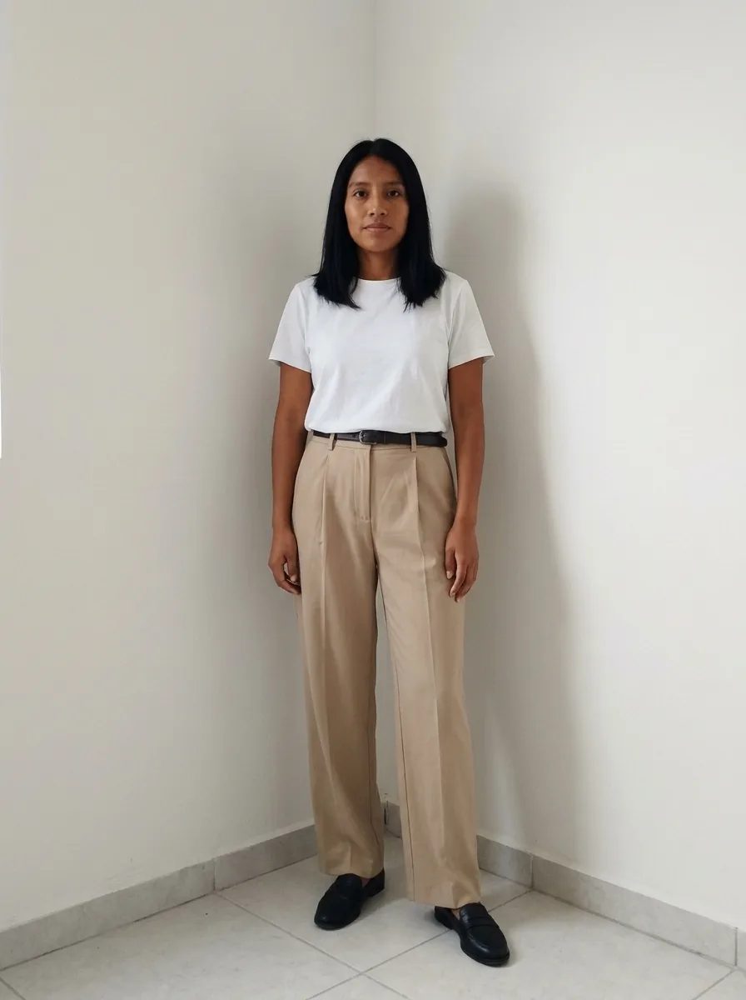
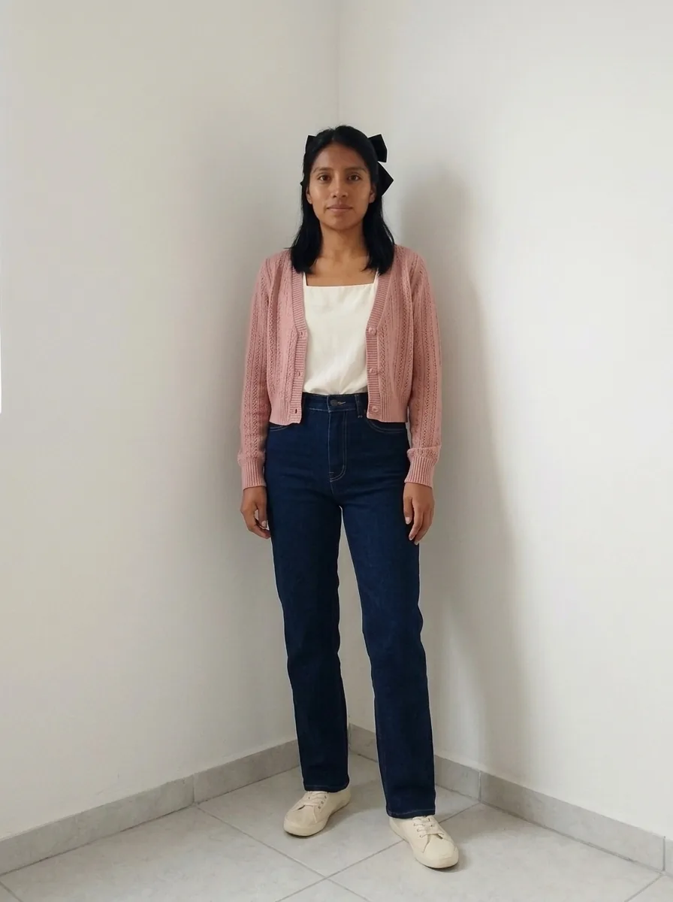
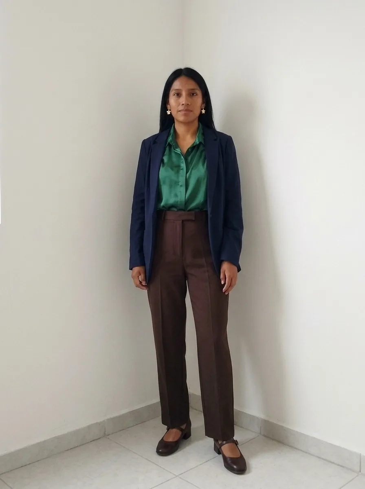
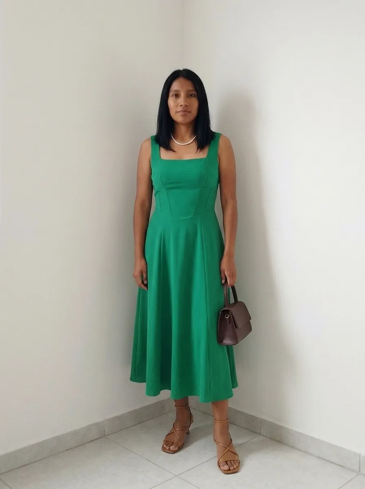
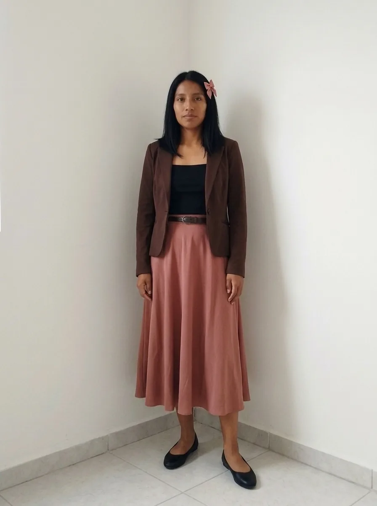
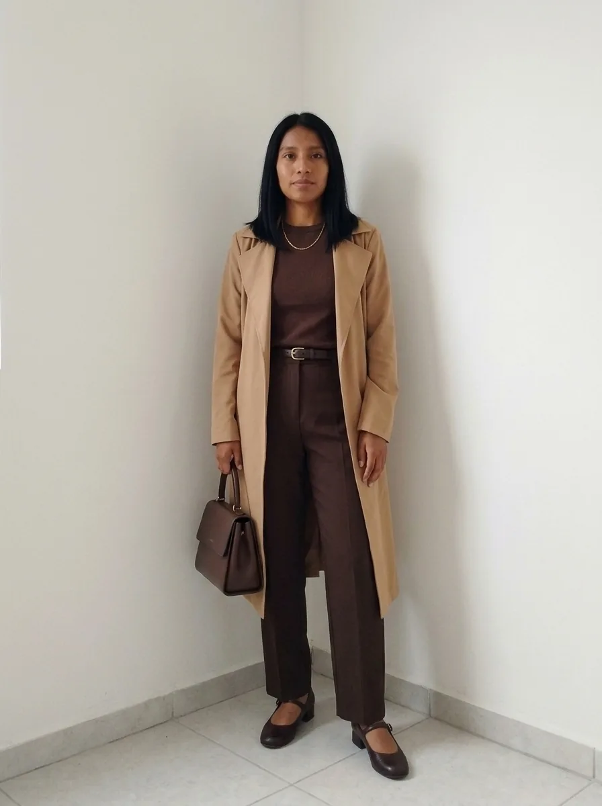

Armario cápsula personalizado para mujer de piel morena cálida, estatura media (1.62 m), complexión media, cuerpo rectangular y cabello negro azabache.

El punto de partida: foto base proporcionada para esta guía.
Tu armario coquette combinará la feminidad de los moños, el encaje, las perlas y las siluetas románticas con cortes que definan visualmente tu cintura sin añadir volumen innecesario. La paleta aprovechará el contraste de tu cabello negro con tu piel morena cálida, mientras que los largos a la cintura, las faldas con movimiento y los detalles delicados crearán proporciones equilibradas para tu estatura.
Principios de estilo que funcionan específicamente para ti
Cuerpo rectangular + complexión media: prioriza vestidos cruzados, blusas con pinzas, faldas con vuelo moderado y pantalones que definan la cintura. Los cinturones delgados, las costuras curvas y los peplos discretos —volantes que nacen de la cintura— ayudan a dibujar una silueta más definida. Evita combinar prendas rígidas y rectas de pies a cabeza cuando quieras destacar la cintura; no necesitas recurrir a corsés apretados ni a mucho volumen.
Estatura media de 1.62 m: busca pantalones de tiro alto (high-waisted), con largo al tobillo o hasta el empeine según el calzado, faldas a la rodilla o midi que terminen en una zona estilizada de la pantorrilla y chamarras que lleguen a la cintura alta o a la cadera. Las prendas petite no son obligatorias: elige según el largo real de tus piernas, torso y brazos, no solo por tu estatura.
Piel morena cálida + cabello negro azabache: tu cabello crea un contraste naturalmente alto con la piel, aunque el grado exacto depende también de tus ojos y de la profundidad de tu tono de piel. Los neutros cálidos y profundos, acompañados de acentos románticos con suficiente intensidad, mantienen el estilo coquette sin hacer que la ropa se vea demasiado pálida junto al rostro. El dorado y el oro rosado son buenos puntos de partida para tus accesorios.
El enfoque de silueta se basa en definir la cintura y distribuir el volumen de manera intencional, no en ocultar tu complexión. La estética coquette se presta especialmente bien a esta estrategia: puedes concentrar los lazos en el cuello, los puños o el cabello y reservar el vuelo para la falda, en lugar de acumular adornos por todo el conjunto.
Paleta recomendada
La distribución sugerida es aproximadamente 70 % de neutros y 30 % de acentos. Los porcentajes son una guía para comprar y combinar, no una regla rígida.
Neutros
Negro#1A1A1A
Marfil cálido#F3E5CF
Chocolate#4A2C22
Camel#B78A5A
Azul marino#202C43
Gris topo cálido#82766B
Acentos potentes
Rosa viejo cálido#C77F88
Rosa coral#E88778
Rojo cereza cálido#B52E42
Verde esmeralda cálido#087F68
Verde oliva#777B3B
Azul petróleo#176B70
Vino#702D43
Evita: Rosa pastel azulado #E8C9E7, lavanda hielo #DCD8F4, blanco óptico #FFFFFF y gris azulado pálido #CFD5DD como grandes superficies cerca del rostro; pueden competir con la calidez de tu piel o hacer que el contraste se vea menos armónico. No están prohibidos: puedes incorporarlos en estampados pequeños si te gusta el efecto.
El negro funciona especialmente bien como base del estilo y como contraste para los detalles románticos. Para suavizarlo sin perder definición, combínalo con marfil cálido, rosa viejo cálido o rosa coral. La elección final de los acentos debe comprobarse con luz natural, porque el subtono cálido no determina por sí solo una estación cromática exacta.
Piezas clave del armario cápsula (25 prendas y pares de calzado)
La selección reúne 25 prendas y pares de calzado, más accesorios esenciales que puedes reutilizar en distintas combinaciones. La idea es que el romanticismo aparezca mediante detalles concretos, no que todas las piezas sean recargadas.
Tops (6-8)
Blusa de escote cuadrado, manga corta ligeramente abullonada y pinzas en la cintura, en Marfil cálido: abre visualmente el escote y define el torso.
Blusa con cuello redondo amplio, mangas con frunce discreto y moño fino en el cuello, en Rosa viejo cálido: aporta el detalle coquette sin sobrecargar el pecho.
Top de tirantes anchos con escote corazón moderado, en Negro: crea una línea curva y sirve como base para capas.
Blusa cruzada con lazada lateral, en Rosa coral: permite ajustar la cintura a tu cuerpo sin depender de una talla rígida.
Camisa de algodón con cuello redondeado y puños amplios, en Marfil cálido: sus puños añaden romanticismo sin aumentar demasiado el volumen central.
Top de punto fino con escote en U, en Chocolate: equilibra el contraste del cabello con un neutro cálido.
Blusa satinada con escote en V suave y botones pequeños, en Verde esmeralda cálido: ofrece una alternativa elegante a los tonos románticos tradicionales.
Bottoms (5-6)
Falda midi de línea A, con cintura definida y vuelo moderado, en Negro: marca la cintura y crea movimiento sin exagerar el volumen de las caderas.
Falda a la rodilla con pinzas y estructura ligera, en Camel: aporta una silueta femenina y funciona tanto para la oficina como para salir.
Pantalón recto de tiro alto, con pretina lisa, en Chocolate: alarga la línea inferior y combina con blusas románticas.
Pantalón de pierna ligeramente amplia, con caída fluida, en Azul marino: equilibra el torso sin recurrir a un corte excesivamente ancho.
Jeans rectos de tiro alto, en Azul marino: constituyen la opción casual del armario; elige un lavado uniforme para facilitar las combinaciones.
Falda midi de satén con caída al sesgo, en Vino: aporta movimiento y un acabado más sofisticado para la noche.
Vestidos / jumpsuits (2-3)
Vestido cruzado con manga corta, cintura ajustable y falda en línea A, en Rosa viejo cálido: define la cintura y dibuja curvas suaves.
Vestido midi con escote cuadrado, costuras entalladas y falda con vuelo moderado, en Verde esmeralda cálido: combina estructura y romanticismo sin depender de adornos excesivos.
Jumpsuit de escote en V, cintura marcada con cinturón delgado y pierna recta, en Negro: es una alternativa práctica al vestido para ocasiones formales.
Abrigos y capas (3-4)
Cárdigan corto, de punto fino y botones pequeños, en Marfil cálido: termina cerca de la cintura y no oculta la forma de las blusas.
Chamarra entallada con costuras curvas y largo a la cadera alta, en Chocolate: define la silueta sin crear una caja recta alrededor del torso.
Saco ligero con solapa estrecha y pinzas, en Azul marino: funciona abierto para alargar la línea vertical y cerrado para marcar la cintura.
Gabardina ligera con cinturón y largo por debajo de la rodilla, en Camel: añade estructura para los días frescos o lluviosos sin necesitar un abrigo pesado.
Calzado (4-5)
Flats de punta almendrada con pequeño moño, en Negro: mantienen el guiño coquette y se integran con las faldas y los pantalones.
Tenis de perfil bajo, en Marfil cálido: aportan comodidad y un acabado limpio a los looks diarios.
Mary Jane de tacón bajo, con una tira fina, en Chocolate: suma un aire romántico sin acortar demasiado visualmente la pierna.
Sandalias de tiras delgadas y tacón medio, en Camel: acompañan vestidos y faldas midi sin añadir peso visual.
Botines de punta afinada y tacón estable, en Negro: son útiles para los meses frescos y las lluvias ligeras.
Accesorios esenciales
Cinturón delgado en Chocolate y otro en Negro, para definir la cintura sin crear una franja demasiado ancha.
Moños para el cabello en Negro y Rosa viejo cálido; prefiere cintas medianas para que el adorno se note sin dominar tus facciones.
Aretes pequeños de perla y aretes dorados en forma de flor, que aportan delicadeza y calidez.
Collar corto de perlas pequeñas y cadena dorada fina, para acompañar escotes cuadrados o en V.
Bolsa estructurada pequeña en Chocolate y bolsa de hombro en Negro, ambas con herrajes dorados discretos.
Mascada de seda estampada con Negro, Marfil cálido y Rosa coral, para anudar al cuello, a la bolsa o al cabello.
Cómo combinarlo (ejemplos de looks que favorecen tu figura)
1. Coquette de diario
blusa de escote cuadrado en Marfil cálido + jeans rectos de tiro alto en Azul marino + cárdigan corto en Rosa viejo cálido + tenis de perfil bajo en Marfil cálido + moño mediano en Negro. La blusa y el tiro alto definen el centro del cuerpo, mientras el cárdigan conserva la proporción de tu torso.

Coquette de diario. Ejemplo visual proporcionado para este perfil.
2. Romántica de oficina
blusa satinada en Verde esmeralda cálido + pantalón recto de tiro alto en Chocolate + saco ligero en Azul marino + Mary Jane de tacón bajo en Chocolate + aretes dorados en forma de flor. La cintura definida y la caída recta aportan formalidad sin perder el carácter femenino.

Romántica de oficina. Ejemplo visual proporcionado para este perfil.
3. Elegancia sin esfuerzo
vestido midi de escote cuadrado en Verde esmeralda cálido + sandalias de tiras delgadas en Camel + bolsa estructurada en Chocolate + collar corto de perlas pequeñas. El escote y las costuras entalladas dan forma al torso, y la falda con movimiento conserva una silueta equilibrada.

Elegancia sin esfuerzo. Ejemplo visual proporcionado para este perfil.
4. La cintura de lazo
top de tirantes anchos en Negro + falda midi de línea A en Rosa viejo cálido + chamarra entallada en Chocolate, abierta para mostrar la cintura + flats de punta almendrada en Negro + cinturón delgado en Chocolate y moño en el cabello en Rosa viejo cálido. La combinación crea una cintura visual, aporta movimiento en la parte inferior y concentra los adornos en puntos estratégicos.

La cintura de lazo. Ejemplo visual proporcionado para este perfil.
5. Tono sobre tono chocolate
top de punto fino en Chocolate + pantalón recto de tiro alto en Chocolate + gabardina ligera en Camel + Mary Jane de tacón bajo en Chocolate + cadena dorada fina y bolsa estructurada en Chocolate. La continuidad del color alarga visualmente la figura; el Camel y el dorado aportan contraste cálido sin romper la armonía.

Tono sobre tono chocolate. Ejemplo visual proporcionado para este perfil.
Consejos prácticos de compra y mantenimiento
Prueba la cintura en movimiento: al sentarte, caminar y levantar los brazos, la pretina debe permanecer cómoda y las pinzas no deben abrirse. En una complexión media con cuerpo rectangular, un ajuste preciso suele funcionar mejor que una prenda demasiado apretada.
Revisa dónde termina cada prenda: las blusas y chamarras cortas deben coincidir con la cintura alta o la cadera alta, sin terminar justo en el punto más ancho de tu torso si eso no te gusta visualmente.
Elige encaje con estructura: busca encaje suave sobre una base opaca y costuras limpias. El encaje demasiado rígido puede añadir volumen en zonas donde prefieres mantener una línea suave.
Cuida los detalles románticos: lava las prendas delicadas en una bolsa de lavado, cierra botones y lazos antes de guardarlas y almacena los accesorios para evitar que las perlas se rayen o las cintas se deformen.
Compra por combinaciones, no por impulso: antes de adquirir una blusa con moños o una falda con vuelo, comprueba que puedas combinarla con al menos tres piezas que ya tengas.
El resultado se basa en cinco rasgos combinados: tu piel morena cálida determina la dirección de los colores; el cabello negro azabache permite aprovechar contrastes marcados; la estatura de 1.62 m orienta los largos y las proporciones; la complexión media pide un ajuste cómodo y bien construido; y la figura rectangular guía la selección de prendas que definen la cintura. El estilo coquette se incorpora a través de lazos, perlas, encaje y siluetas románticas, equilibrados con prendas funcionales y líneas limpias.
Armario cápsula por temporadas
Adaptado específicamente a mujer de piel morena cálida, estatura media (1.62 m), complexión media, cuerpo rectangular y cabello negro azabache.
Núcleo todo el año (las piezas que más se usan)
Blusa de escote cuadrado en Marfil cálido.
Top de tirantes anchos en Negro.
Blusa cruzada en Rosa coral.
Pantalón recto de tiro alto en Chocolate.
Jeans rectos de tiro alto en Azul marino.
Falda midi de línea A en Negro.
Vestido cruzado en Rosa viejo cálido.
Cárdigan corto en Marfil cálido.
Estas piezas se combinan con las de temporada.
Primavera / Verano
Piezas estacionales clave
Blusa de algodón con cuello redondeado en Marfil cálido, para mantener frescura y aportar un detalle romántico.
Top de tirantes anchos en Negro, para usar solo o debajo de una capa ligera.
Blusa cruzada en Rosa coral, para definir la cintura sin recurrir a telas gruesas.
Falda midi de línea A en Negro, con tejido ligero y transpirable.
Pantalón recto de tiro alto en Chocolate, preferentemente de lino mezclado o algodón ligero.
Vestido midi de escote cuadrado en Verde esmeralda cálido, para ocasiones que requieren una prenda completa.
Sandalias de tiras delgadas en Camel, para alargar visualmente la línea del pie.
Tenis de perfil bajo en Marfil cálido, para recorridos cotidianos y días informales.
Looks por ocasión
Oficina. Blusa satinada en Verde esmeralda cálido, pantalón recto en Chocolate, saco ligero en Azul marino y Mary Jane en Chocolate. La cintura definida y el pantalón recto equilibran el torso.
Casual. Blusa de algodón en Marfil cálido, jeans rectos en Azul marino, tenis en Marfil cálido y moño en Negro. Combina comodidad con detalles coquette sin añadir volumen innecesario.
Formal. Vestido midi en Verde esmeralda cálido, sandalias en Camel, collar corto de perlas y bolsa en Chocolate. El escote cuadrado y la falda con movimiento dan forma al conjunto.
Salir con amigas. Top en Negro, falda midi en Rosa viejo cálido, cárdigan corto en Marfil cálido y flats en Negro. La cintura alta y la diferencia entre el top y la falda definen las proporciones.
Cena romántica. Vestido cruzado en Rosa viejo cálido, sandalias en Camel, bolsa en Chocolate y aretes dorados en forma de flor. El cruce crea una línea diagonal favorecedora y el color armoniza con la piel cálida.
Otoño / Invierno
En el clima templado-cálido de Guadalajara, conviene pensar en mañanas frescas, tardes templadas y episodios de lluvia durante buena parte del verano, en lugar de construir un armario de frío extremo. Las medias capas, el punto fino y una prenda exterior ligera son más versátiles que los abrigos gruesos.
Piezas estacionales clave
Suéter de punto fino con escote amplio en Chocolate, para abrigarte sin crear demasiado volumen.
Blusa de manga larga con puños románticos en Marfil cálido, para llevar bajo el saco o el cárdigan.
Pantalón de pierna ligeramente amplia en Azul marino, con tejido de peso medio.
Falda midi de satén en Vino, para incorporar profundidad cromática en looks de tarde y noche.
Chamarra entallada en Chocolate, con costuras curvas y botones discretos.
Gabardina ligera en Camel, con cinturón ajustable y espacio suficiente para una capa interior.
Botines de punta afinada en Negro, con tacón estable y suela adecuada para superficies húmedas.
Mascada en Negro, Marfil cálido y Rosa coral, para añadir color cerca del rostro sin depender de una blusa estampada.
Looks por ocasión
Oficina. Blusa de manga larga en Marfil cálido, pantalón recto en Chocolate, saco en Azul marino y Mary Jane en Chocolate. Las costuras y la cintura alta definen la figura con una estructura profesional.
Casual. Suéter fino en Chocolate, jeans rectos en Azul marino, chamarra entallada en Chocolate y tenis en Marfil cálido. El suéter suave evita una silueta rígida y la chamarra marca la cintura.
Formal. Blusa satinada en Verde esmeralda cálido, falda midi en Vino, botines en Negro y bolsa estructurada en Chocolate. Los tonos profundos aprovechan el contraste del cabello y dan un acabado elegante.
Salir con amigas. Top en Negro, pantalón de pierna ligeramente amplia en Azul marino, gabardina en Camel y flats en Negro. La línea vertical de la gabardina abierta alarga visualmente el conjunto.
Cena romántica. Vestido cruzado en Rosa viejo cálido, gabardina en Camel, botines en Negro y collar corto de perlas pequeñas. El cruce define la cintura y las capas ligeras permiten adaptarte a una noche fresca.
Consejos rápidos para que todo funcione
Define la cintura con intención: utiliza pinzas, costuras curvas o un cinturón delgado; no necesitas que todas las prendas sean ceñidas.
Controla el volumen: si llevas mangas abullonadas, prefiere una falda de vuelo moderado; si eliges una falda con más movimiento, mantén el top más sencillo.
Aprovecha el contraste natural: combina Negro con Marfil cálido o con un acento potente para dar protagonismo a tu cabello azabache.
Adapta las capas al clima: en primavera y verano, usa algodón ligero y capas que puedas quitar; en otoño e invierno, añade punto fino y gabardina.
Mantén el coquette reconocible: utiliza uno o dos detalles románticos por conjunto, como un moño y unas perlas, en vez de mezclar encaje, volantes, lazos y estampados en una sola combinación.
Lista de compra prioritaria
Ordenada de más a menos urgente para construir el armario cápsula personalizado (piel morena cálida, estatura media de 1.62 m, complexión media, cuerpo rectangular y cabello negro azabache).
La Prioridad 1 contiene 8 piezas con las que puedes armar combinaciones casuales, de oficina y románticas para salir, sin comprar todavía todos los accesorios ni las prendas estacionales. Son los fundamentos que más aprovechan la definición de cintura, la versatilidad de los neutros y el carácter coquette.
Prioridad 1 – Fundamentos (compra primero)
Empieza por estas ocho piezas. Busca que cada una funcione con, al menos, otras dos de la lista antes de decidirte.
1. Blusa de escote cuadrado – 1 pieza
Colores: Marfil cálido.
Qué buscar: algodón suave, pinzas en el torso, escote cuadrado que no se abra al moverte y manga corta ligeramente abullonada.
2. Top de tirantes anchos – 1 pieza
Colores: Negro.
Qué buscar: tela opaca, escote corazón moderado y ajuste cómodo en busto y cintura; debe poder usarse solo o debajo de una chamarra.
3. Blusa cruzada – 1 pieza
Colores: Rosa coral.
Qué buscar: cruce ajustable, tela fluida que no se transparente y lazada lateral que defina la cintura sin apretar.
4. Pantalón recto de tiro alto – 1 pieza
Colores: Chocolate.
Qué buscar: pretina firme pero cómoda, frente limpio y largo al tobillo o al empeine según el calzado que utilices.
5. Jeans rectos de tiro alto – 1 pieza
Colores: Azul marino.
Qué buscar: mezclilla de peso medio, lavado uniforme y largo que no forme demasiados pliegues sobre los tenis.
6. Falda midi de línea A – 1 pieza
Colores: Negro.
Qué buscar: cintura definida, vuelo moderado y largo por debajo de la rodilla o midi, comprobando que el borde no corte visualmente la pantorrilla en su zona más ancha.
7. Vestido cruzado – 1 pieza
Colores: Rosa viejo cálido.
Qué buscar: manga corta, escote en V moderado, ajuste regulable y falda con movimiento. Comprueba que el cruce no se abra al caminar o sentarte.
8. Cárdigan corto – 1 pieza
Colores: Marfil cálido.
Qué buscar: punto fino, botones pequeños, hombros bien ajustados y un largo que termine cerca de la cintura alta para no ocultar la silueta.
Prioridad 2 – Versátiles de temporada (siguiente nivel)
Una vez resuelta la base, incorpora prendas que adapten los mismos conjuntos a temperaturas y ocasiones distintas.
Primavera/Verano
Sandalias de tiras delgadas en Camel, con tacón medio estable.
Blusa de algodón con cuello redondeado en Marfil cálido, para los días calurosos.
Pantalón de pierna ligeramente amplia en Azul marino, confeccionado en una tela ligera.
Vestido midi de escote cuadrado en Verde esmeralda cálido, para eventos diurnos o comidas especiales.
Otoño/Invierno
Suéter de punto fino en Chocolate, con escote amplio y mangas de volumen moderado.
Chamarra entallada en Chocolate, con costuras curvas.
Gabardina ligera en Camel, con cinturón ajustable.
Botines de punta afinada en Negro, con tacón estable y suela adecuada para la lluvia.
Prioridad 3 – Accesorios y remates
Los accesorios consolidan la identidad coquette y aportan variedad sin aumentar demasiado el número de prendas.
Moños para el cabello en Negro y Rosa viejo cálido, de tamaño mediano.
Aretes pequeños de perla y aretes dorados en forma de flor, para distintos niveles de formalidad.
Cinturón delgado en Chocolate, para marcar la cintura sobre vestidos, faldas o pantalones.
Bolsa estructurada en Chocolate, con herrajes dorados discretos, que funcione tanto con looks románticos como con conjuntos de oficina.
Estas compras son para enriquecer el estilo cuando la base ya funcione; ninguna es indispensable desde el principio.
Blusa satinada en Verde esmeralda cálido, con escote en V suave y botones pequeños.
Falda midi de satén en Vino, para cenas y ocasiones elegantes.
Saco ligero en Azul marino, con pinzas y solapa estrecha.
Jumpsuit en Negro, con cintura marcada y pierna recta, para alternar con los vestidos.
Mascada en Negro, Marfil cálido y Rosa coral, para variar los accesorios sin comprar más ropa.
Consejos de compra inteligentes
Prioriza el ajuste antes que la talla de etiqueta: en una complexión media, las pinzas, la pretina y las costuras deben acompañar tu cuerpo sin tirar de la tela. Si una prenda te queda bien de hombros pero sobra en la cintura, considera un ajuste de sastrería.
Comprueba los largos con tu calzado habitual: prueba la falda midi con flats y con tacón bajo, y el pantalón con tenis y botines. Así evitarás comprar prendas que requieran arreglos adicionales.
Invierte primero en las prendas estructurales: el pantalón recto, la falda de línea A y el vestido cruzado sostienen gran parte de tus combinaciones porque ayudan a definir la cintura sin depender de adornos.
Compra detalles románticos intercambiables: los moños, las perlas y los aretes florales permiten variar un conjunto básico sin llenar el armario de prendas con encaje o volantes difíciles de combinar.
Colores prioritarios: Negro, Marfil cálido, Chocolate, Rosa viejo cálido y Azul marino.
La recomendación final es mantener el equilibrio entre estructura y delicadeza: las prendas deben definir tu silueta rectangular y respetar las proporciones de tu estatura de 1.62 m, mientras que los tonos cálidos armonizan con tu piel morena y el contraste del cabello negro azabache. Con una base de neutros, acentos románticos bien elegidos y capas ligeras para el clima templado-cálido de México, tendrás un armario coquette reconocible, combinable y adaptado a ti, sin depender de comprar prendas nuevas para cada ocasión.
Variantes de los ejemplos: el cárdigan rosa y la falda rosa pueden sustituir a los de marfil y negro de la cápsula. No necesitas comprar ambas versiones.
Cómo se preparó esta guía
Recomendaciones e imágenes suministradas para este perfil. La paleta es una referencia de estilo, no una medición individual. Comprueba colores, comodidad y largos frente al espejo. Esta página no vende ropa ni cobra por recomendaciones.